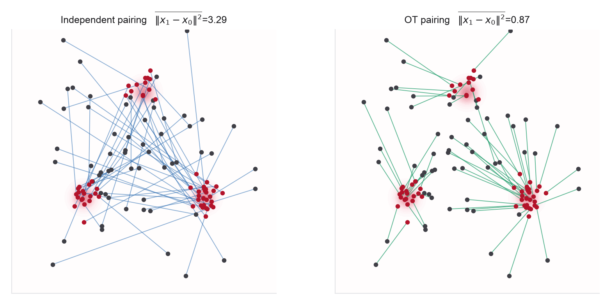

- The CFM loss and its unbiasedness from Problem 1
- Straightness, curvature, and transport cost from Problem 2
- The Week 1 ODE-solver scaffold (Euler/Heun), reused here for sampling
- A small MLP in PyTorch or JAX, conditioned on time \(t\)
- A linear-assignment or Sinkhorn routine for minibatch OT
- Tong et al. (OT-CFM), §3.2 and Figure 1 for I-CFM versus OT-CFM
- flow_matching library for a reference CFM loop
- POT (Python Optimal
Transport) for
emd(exact) andsinkhornplans - The straightness section of the notes for the metrics you will reproduce
This lab trains a real flow-matching model, on a 2D target chosen so you can see the paths. You will implement conditional flow matching once and swap only the coupling, the rule for pairing a noise sample with a data sample, between the independent pairing of Problem 1 and a minibatch optimal-transport pairing. Everything you proved in Problems 1 and 2 becomes measurable: both couplings train to the same target distribution (CFM is unbiased for any valid coupling), but the OT coupling gives straighter trajectories, lower transport cost, and better few-step samples. You will also find the catch, minibatch OT is biased at finite batch size, and measure it.

Default setup (use unless a part says otherwise). Target: a balanced 3-component Gaussian mixture in \(\mathbb R^2\) with means \((2,0),(-1,\sqrt3),(-1,-\sqrt3)\) and covariance \(0.05\,I\) per component; base \(\mathcal N(0,I)\). Hold the architecture, optimizer, number of training steps, seeds, and evaluation sample size fixed across all methods; the coupling is the only thing that changes. Two moons is an optional extension. Metrics. Report the straightness error on held-out coupled pairs, \(\widehat S=\mathbb E_{(x_0,x_1),t}\|v_\theta((1-t)x_0+t x_1,t)-(x_1-x_0)\|^2\) (lower is better), which is the CFM training residual on coupled interpolant points and the cheap surrogate for the trajectory straightness \(S(Z)\) of Problem 2, aligned with it but evaluated on the fitted regression rather than the sampled ODE path; the transport cost \(\widehat C=\mathbb E\|x_1-x_0\|^2\) of the same held-out coupling; and the energy distance \[ \widehat D_E^2(A,B)=\frac{2}{mn}\sum_{i,j}\|a_i-b_j\|-\frac{1}{m^2}\sum_{i,j}\|a_i-a_j\|-\frac{1}{n^2}\sum_{i,j}\|b_i-b_j\|. \] Evaluate with 10,000 generated and 10,000 target samples, \(\mathrm{NFE}\in\{1,2,4,8,16,32,64\}\), and \(B\in\{16,32,64,128,256\}\); call a sampler "within tolerance" when its energy distance is within 10% of that model's best 64-NFE score.
Implement a small set of functions with clean interfaces.
sample_base(n, rng) # standard Gaussian x0 sample_data(n, rng) # 2D target: default 3-mode MoG (see setup box) interpolant(x0, x1, t) # straight path x_t = (1-t)x0 + t x1 independent_coupling(x0, x1) # pair the B base and B data samples by index ot_coupling(x0, x1) # exact linear assignment, squared-Euclidean cost cfm_loss(model, x0, x1, t) # || v_theta(x_t, t) - (x1 - x0) ||^2 sample_ode(model, x0, n_steps) # Euler/Heun integration t: 0 -> 1 straightness_error(model, x0, x1) # S-hat on held-out coupled pairs; lower is better transport_cost(x0, x1) # mean ||x1 - x0||^2 of the coupling energy_distance(a, b) # sample distance between generated and data
- Baseline: independent CFM. Train a small time-conditioned MLP \(v_\theta(x,t)\) with the CFM loss under the independent coupling: each minibatch draws \(B\) independent base samples \(x_0\sim\mathcal N(0,I)\) and \(B\) independent data samples \(x_1\sim q\), pairs them by minibatch index (no OT matching or sorting), samples \(t\sim\mathcal U[0,1]\), forms \(x_t\), and regresses onto \(x_1-x_0\). Sample with a many-step Euler/Heun integrator and confirm the generated distribution matches the target (overlay on the density, and report the energy distance). This is your unbiased reference; keep the trained model.
- Minibatch OT-CFM. Change one thing. Within each minibatch of size \(B\), solve the exact linear-assignment (optimal-transport) problem between the \(B\) noise points and the \(B\) data points under squared-Euclidean cost with equal weights, and use the resulting matched pairs \((x_0,x_1)\) as the coupling before forming \(x_t\). (Entropic Sinkhorn is optional; it returns a soft plan rather than a matching, so if you use it, either sample pairs from the normalized plan or take a barycentric target, and state which.) Train an otherwise identical model. Verify it also matches the target distribution, so in the ideal CFM limit the coupling did not change what is generated, only how.
- Straightness and transport cost. For both trained models, estimate the straightness error \(\widehat S=\mathbb E_{(x_0,x_1),t}\|v_\theta((1-t)x_0+t x_1,t)-(x_1-x_0)\|^2\) on a held-out set of coupled pairs drawn from the same coupling used to train that model (average over \(K\) random times per pair), and the realized transport cost \(\widehat C=\mathbb E\|x_1-x_0\|^2\). Report both; lower is better for each. You should find OT-CFM has markedly lower transport cost and lower straightness error, matching Problem 2's prediction. Plot a handful of generated ODE trajectories from each model, as in the figure, to see the crossing difference.
- Few-step sampling. This is the comparison the coupling was chosen for. For both models, plot a sample-quality metric (energy distance to the data, or per-mode population error) against the number of network function evaluations, from 1 up to 64, using Euler steps. Show that OT-CFM reaches good samples in far fewer evaluations, and that at a large step budget the gap should narrow as ODE discretization error is removed. Do not expect exact convergence: any residual gap is model, optimization, or coupling-approximation error, not discretization error, and you should say which. Identify the smallest NFE at which each is within tolerance, and connect the curve to the one-step-error bound of Problem 2.
- The batch-size effect. Minibatch OT is a biased approximation to the population OT coupling: at finite \(B\) the plan over a random size-\(B\) subset induces a different coupling, vector field, and transport cost than population OT, approaching it only as \(B\) grows. Crucially, in the ideal CFM limit any valid coupling still has the correct endpoint marginals; so the effect to measure is a practical one, where finite \(B\), finite training, and coarse ODE sampling interact. Retrain OT-CFM at several batch sizes \(B\) and show that straightness error falls as \(B\) grows, while very small \(B\) can worsen sample quality or mode balance (an over-eager local matching that ignores the global geometry). Characterize the regime where minibatch OT helps without hurting, and state why this is exactly the tradeoff Week 5 formalizes with entropic OT and Sinkhorn.
- One reflow round. Implement the reflow of Problem 2 on the independent-coupling model: generate endpoint pairs \((x_0,G^{(0)}(x_0))\) by integrating the trained flow, then retrain a fresh model by CFM on the straight lines between them. Show that a single reflow round lowers the straightness error \(\widehat S\) and improves few-step samples, approaching OT-CFM, and check that the generated marginals are preserved. Discuss which is preferable in practice, OT coupling during training or reflow after it, and at what cost.
- Dimension (optional). Repeat the straightness and few-step comparison as you raise the data dimension (embed the 2D target in \(\mathbb R^{d}\) with structured or noise dimensions, or use a Gaussian-mixture target in higher \(d\)). Report how the OT-versus-independent gap scales, and connect to why couplings matter more, and minibatch OT gets harder, in the high-dimensional molecular and materials settings of the second half of the course.